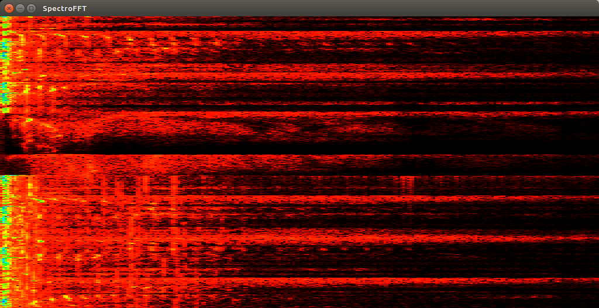

OpenGL SDL FFT

About
This is a fun side project that allows you to view the spectrum of an audio sample coming from PulseAudio.
It uses OpenGL, SDL, GLEW, and the fftw3 library.
Requirements
The following libraries , with their listed ubuntu (x64) package, are required to compile this program:
- SDL 2 :: libsdl2, libsdl2-dev
- GLEW :: libglew1.10, libglew-dev
- GLU :: libglu1-mesa, libglu1-mesa-dev
- PulseAudio :: libpulse0, libpulse-dev
- FFTW3 :: libfftw3-bin, libfftw3-dev
Compilation
gcc -o main main.c -lm -lpulse -lpulse-simple -lfftw3 -lSDL -lGL -lGLU -lGLEW
Suggestions?
Since this is a side project, I may not be able to implement many suggestions very quickly, however, I am open to them. Just open a new issue with your idea and I'll consider it.